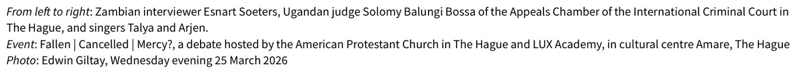

Prueba · Foto
Solomy Balungi Bossa en el debate de La Haya, 25 de marzo de 2026
El pasaje
«De izquierda a derecha: la entrevistadora zambiana Esnart Soeters, la jueza ugandesa Solomy Balungi Bossa, de la Sala de Apelaciones de la Corte Penal Internacional en La Haya, y los cantantes Talya y Arjen. Evento: Fallen | Cancelled | Mercy?, un debate organizado por la American Protestant Church de La Haya y LUX Academy, en el centro cultural Amare, La Haya. Foto: Edwin Giltay, miércoles 25 de marzo de 2026 por la noche». Página 1, el pie bajo la foto. Las tres líneas, introducidas en cursiva por «From left to right», «Event» y «Photo» respectivamente, se han unido aquí, con un punto añadido tras «The Hague» al final de la segunda. Traducido del inglés; el texto original figura a continuación.
Texto original
“From left to right: Zambian interviewer Esnart Soeters, Ugandan judge Solomy Balungi Bossa of the Appeals Chamber of the International Criminal Court in The Hague, and singers Talya and Arjen. Event: Fallen | Cancelled | Mercy?, a debate hosted by the American Protestant Church in The Hague and LUX Academy, in cultural centre Amare, The Hague. Photo: Edwin Giltay, Wednesday evening 25 March 2026”

Por qué importa este documento
El 25 de marzo de 2026, el autor habló con la jueza Solomy Balungi Bossa, de la Corte Penal Internacional, como menciona el final del ensayo. Ella participó como invitada principal en un debate público en Amare, La Haya, a la vista del edificio del Ministerio de Defensa. Este documento contiene la foto del panel que el propio Giltay tomó aquella noche, con su pie de foto, y el anuncio que LUX Academy, una de las organizadoras, publicó en Instagram. De ellos se desprende cuándo y dónde tuvo lugar el debate, y quién era la jueza a la que el autor formuló allí su pregunta sobre quienes encubren pruebas de crímenes de guerra. Bossa había sido antes jueza durante diez años en el Tribunal Penal Internacional para Ruanda de las Naciones Unidas y, de 2012 a 2018, en el Mecanismo Residual que continúa la labor de los tribunales para Ruanda y para la ex-Yugoslavia.
Procedencia
- Documento
- Compilación de dos páginas: una foto del debate con su pie en la página 1 y, en la página 2, una captura de pantalla del anuncio en Instagram
- Evento
- «Fallen | Cancelled | Mercy?» (caído | cancelado | ¿misericordia?), un debate organizado por la American Protestant Church de La Haya y LUX Academy
- Lugar
- Centro cultural Amare, La Haya
- Fecha
- Miércoles 25 de marzo de 2026, por la noche
- Foto
- Edwin Giltay
- En la imagen
- La entrevistadora zambiana Esnart Soeters, la jueza ugandesa Solomy Balungi Bossa, de la Sala de Apelaciones de la Corte Penal Internacional en La Haya, y los cantantes Talya y Arjen
- Trayectoria
- Jueza del Tribunal Penal Internacional para Ruanda de las Naciones Unidas (2003–2013) y del Mecanismo Residual (2012–2018), según su perfil en www.
icc-cpi. int/ judges/ judge-solomy-balungi-bossa - Anuncio
- Publicación en Instagram de luxdenhaag070, LUX Academy, fechada el 18 de febrero, que comienza con «An evening with a judge and you’re not even on trial!» (¡una velada con una jueza, y ni siquiera estás en el banquillo!)
- Tema
- Una velada pública sobre la justicia y la misericordia con una jueza de la Corte Penal Internacional, anunciada para el miércoles 25 de marzo, a las 20:00, en Amare, La Haya
- Idioma
- Inglés, con la interfaz de Instagram en neerlandés
- Páginas
- 2
- Dirección web
- instagram.com/p/DU6CYddCNpH, leída en la barra de direcciones de la captura de pantalla
Citado en: el ensayo «La prohibición cayó, el libro quedó en pie» en el capítulo (12) «No queda otra opción».
Ficha de prueba: https://
Documento: https://
Modificado por última vez el 13 de septiembre de 2026, consultado el 27 de noviembre de 2026.

Esta página es una ficha de prueba del libro El general del encubrimiento de Edwin Giltay y del sitio web que lo acompaña.